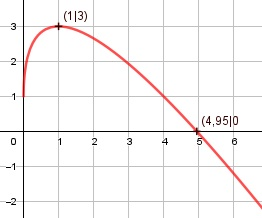

Aufgabe 131 f(x) = 1 - 2x + 4 * = 1 - 2x + 4 * x0,5 f'(x) = -2 + 0,5 * 4 * x-0,5 = -2 + 2 * x-0,5 1 f''(x) = -0,5 * 2 * x-1,5 = - ---- x1,5 1,5 f'''(x) = -(-1,5) * x-2,5 = ------ x2,5 x muss ≥ 0 sein, wegen Quadratwurzel Definitionsbereich: 0 ≤ x < ∞ Verhalten im Unendlichen: 1 - 2x + 4 * geht gegen ∞ für x --> ∞ Wertebereich: f(x) wird dann am größten, wenn x = 1 (Extremum) f(1) = 3 --> -∞ < f(x) ≤ 3 Symmetrie: f(-x) = 1 – 2 * (-x) + 4 * f(-x) = 1 + 2x + 4 * ≠ f(x) --> keine Achsensymmetrie -f(-x) = -(1 + 2x + 4 * ) -f(-x) = -1 - 2x - 4 * ≠ f(x) --> keine Punktsymmetrie Nullstellen: f(x) = 0 1 - 2x + 4 * = 0 |+2x 1 + 4 * = 2x|-1 4 * = 2x - 1 |2 16x = 4x2 - 4x + 1 |-16x 4x2 - 20x + 1 = 0 A, B, C - Formel. A = 4, B = -20, C = 1 x1,2 = x1,2 = x1,2 = 20 ± 19,6 x1,2 = ----------- 8 x1 = 4,95 x2 = 0,05 Probe, weil vorher quadriert wurde: f(4,95) = 1 - 2 * 4,95 + 4 * ≈ 0 f(0,05) = 1 - 2 * 0,05 + 4 * = 1,8 ≠ 0 --> N(4,95|0) Schnittpunkt mit der y-Achse: x = 0 1 – 2 * 0 + 4 * = 1 Sy(0|1) Extrempunkte: f'(x) = 0 2 -2 + ----- = 0 |*x0,5 x0,5 -2 * x0,5 + 2 = 0 |+2 * x0,5 2 * x0,5 = 2 |:2 x0,5 = 1 |2 x = 1 f(1) = 1 - 2 * 1 + 4 * = 3 1 f''(1) = - ------ < 0 --> Hochpunkt (1|3) 11.5 Wendepunkte: f''(x) = 0 1 - ----- = 0 |*x1,5 x1,5 -1 = 0 --> Widerspruch --> keine Wendepunkte Graph:
